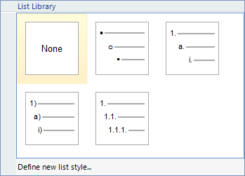

List Styles
RadRichTextEditor has support for bulleted, numbered and multilevel lists. In addition, you have
the ability to create custom list styles and add them to the list styles gallery.
User Interface
You can specify whether you wish to use bulleted, numbered or some kind of multilevel list from the predefined UI
of RadRichTextEditor:

When using a multilevel list, you can easily change the level using the default key-bindings (Tab for increasing
the indent and Shift + Tab for decreasing it).
Through the user interface, you can also create a multilevel list using the Define New List Style
dialog. Your new style can have up to 9 levels, each of which can be customized. You can choose the font, font size, font
weight, color and symbol to be used as the current level's mark. In addition, using the advanced settings you can
create a level which includes in itself the symbol from another level.

After defining your new style, it is added to the list gallery and can easily be accessed and used throughout the
document.

Creating Lists Programmatically
The default list styles come handy, as they require little to no effort on your part, but you can create your own
using the API. The functionality you need to use is located in the DocumentList, ListStyle and ListLevelStyle classes. Here are the steps you need to follow in order to create
a new list:
Create a new instance of ListStyle. You can see that the ListStyle
class has a static readonly field ListLevels that keeps the number of levels that the default lists
can have (9). It is recommended that you allow your lists to have that many levels for uniformity and for prettier conversion
between list types.Define a ListLevelStyle for each level depending on the way you wish your bullet or number
to appear, and add it to the Levels property. The customization options are presented by several
properties. In the example below, these are specified:
StartingIndex – should the list start at 0 or 1 for example;
NumberingFormat – the numbering format that you wish to use. The available
numbering formats are defined as an enum called ListNumberingFormat. The options provided
are: Bullet, Decimal, UpperLetter,
LowerLetter, UpperRoman and LowerRoman.LevelText - the string format that you would like the numbers/bullets to appear in at
each level. Using this property, you can set if you wish the list item to contain the numbers of its predecessors (like
in the NumberedHierarchical list style) or not (like in the other predefined list styles)Indent – affects the indent of each level.
- Create a DocumentList and in the constructor pass the appropriate ListStyle object. The DocumentList is the object that knows how the list should look (this is specified by the ListStyle which we pass through the constructor) and which paragraphs are part of it. You add a paragraph to a DocumentList by setting paragraph’s ListId property to the ID of the DocumentList.
Here as an example of creating a ListStyle and a DocumentList programmatically:
__[C#] __
ListStyle upperRomanHierarchical = new ListStyle();
upperRomanHierarchical.StyleLink = "Style1";
for (int i = 0; i < ListStyle.ListLevels; ++i)
{
StringBuilder levelText = new StringBuilder();
for (int j = 0; j < i + 1; ++j)
{
levelText.Append("{" + j + "}.");
}
upperRomanHierarchical.Levels.Add(new ListLevelStyle()
{
StartingIndex = 1,
NumberingFormat = ListNumberingFormat.UpperRoman,
LevelText = levelText.ToString(),
Indent = 48 + i * 24
});
}
__[VB.NET] __
Dim upperRomanHierarchical As New ListStyle()
upperRomanHierarchical.StyleLink = "Style1"
For i As Integer = 0 To ListStyle.ListLevels - 1
Dim levelText As New StringBuilder()
For j As Integer = 0 To i
levelText.Append("{" & j & "}.")
Next j
upperRomanHierarchical.Levels.Add(New ListLevelStyle() With {.StartingIndex = 1, .NumberingFormat = ListNumberingFormat.UpperRoman, .LevelText = levelText.ToString(), .Indent = 48 + i * 24})
Next i
'#End Region
'#Region "paragraph"
Dim paragraph As Paragraph = Me.radRichTextEditor1.Document.CaretPosition.GetCurrentParagraphBox().AssociatedParagraph
'#End Region
'#Region "newStyle"
Dim newListStyle As ListStyle = Me.radRichTextEditor1.Document.AddCustomListStyle(upperRomanHierarchical)
Dim documentList As New DocumentList(newListStyle, Me.radRichTextEditor1.Document)
'#End Region
'#Region "assing"
paragraph.ListId = documentList.ID
'#End Region
End Sub
End Class
Applying List Style Programmatically
After creating a ListStyle you need to add it to the document. Besides using the UI you can do that
through code the method of RadDocument AddCustomListStyle(ListStyle listStyle). You just pass the style
you created and it gets added to the document. It will also be visible in the List Styles gallery.
If you want to apply a style to a paragraph using the user interface you would move the caret to the paragraph and click
the appropriate ListStyle in the gallery. In code behind things are similar. First you need a reference to the paragraph you
want to be added to a list. Let's say you need the current paragraph (in which the caret position resides). The code
is as follows:
__[C#] __
Paragraph paragraph = this.radRichTextEditor1.Document.CaretPosition.GetCurrentParagraphBox().AssociatedParagraph;
__[VB.NET] __
Dim paragraph As Paragraph = Me.radRichTextEditor1.Document.CaretPosition.GetCurrentParagraphBox().AssociatedParagraph
'#End Region
'#Region "newStyle"
Dim newListStyle As ListStyle = Me.radRichTextEditor1.Document.AddCustomListStyle(upperRomanHierarchical)
Dim documentList As New DocumentList(newListStyle, Me.radRichTextEditor1.Document)
'#End Region
'#Region "assing"
paragraph.ListId = documentList.ID
'#End Region
End Sub
End Class
All you have to do now is set the ListId property of the paragraph. However this id should be
the ID of a DocumentList that uses the new ListStyle. This document list
is created automatically when using the user interface, but in code you have to create it on your own.
As the logic of creating a custom list style is rather complex, the method AddCustomListStyle
does that and returns an instance of ListStyle which is different from the one you passed. When creating the new document
list you need to pass the list style returned from this method. So creating a document list look like this:
__[C#] __
ListStyle newListStyle = this.radRichTextEditor1.Document.AddCustomListStyle(upperRomanHierarchical);
DocumentList documentList = new DocumentList(newListStyle, this.radRichTextEditor1.Document);
__[VB.NET] __
Dim newListStyle As ListStyle = Me.radRichTextEditor1.Document.AddCustomListStyle(upperRomanHierarchical)
Dim documentList As New DocumentList(newListStyle, Me.radRichTextEditor1.Document)
'#End Region
'#Region "assing"
paragraph.ListId = documentList.ID
'#End Region
End Sub
End Class
Having the new DocumentList all you have to do in order the paragraph to be added to the list
is to set it's ListId property to the ID of the new DocumentList:
__[C#] __
paragraph.ListId = documentList.ID;
__[VB.NET] __
paragraph.ListId = documentList.ID
'#End Region
End Sub
End Class